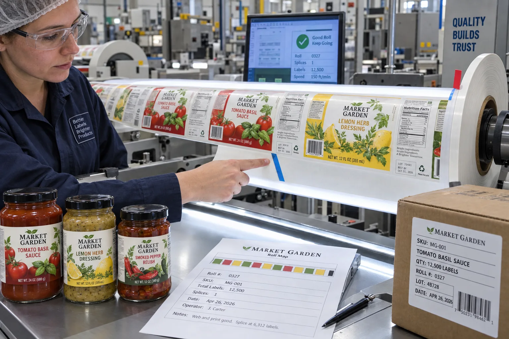

Short answer
Do not leave splice acceptance to the delivery day. The purchase specification should state whether splices are allowed, the maximum per roll, join construction, tape side, web alignment, edge flag, count method and carton record. A zero-splice rule is valid when the line requires it, but it carries yield and cost consequences.
A splice is where two lengths of release liner are joined so useful production can continue. It is not automatically poor workmanship. An unmarked, bulky or crooked splice is poor control.
What a controlled splice needs
| Control | Purpose | Failure if ignored |
|---|---|---|
| Web edge alignment | Maintains tracking through guides | Web walks and labels shift |
| Approved tape and side | Creates a thin secure join | Tape catches guides or releases |
| Pitch control | Preserves the next label position | Sensor or applicator loses registration |
| Edge flag | Warns the operator or detector | Unexpected stop or damaged product |
| Roll and carton record | Supports planning and traceability | Shift cannot identify affected rolls |
A composite co-packer dispute
This is a composite planning example. A co-packer stops a beverage run after finding a red flag on a roll and reports a defective product. The converter replies that one splice per roll is standard. Neither side can produce an approved splice clause.
I understand why each side is annoyed. The converter is trying not to discard a long run for one web break. The co-packer has a line where an unexpected join can lose product and cleaning time. The real defect happened before production: purchasing approved price, core and unwind but never approved splice handling.
Zero-splice rolls are not free
Requiring every roll to be splice-free can increase waste, shorten roll lengths or raise converting cost. It may be justified for nonstop high-speed lines, vision-inspected applications or processes where a join cannot safely pass. For slower lines with trained operators, one clearly flagged splice may be the better commercial decision.
The point is not to defend splices. It is to price the operational consequence honestly. A converter should disclose the rule, and a buyer should state what the machine can tolerate.
Test the join, not only the labels
A line trial usually focuses on adhesion and placement. Feed at least one representative splice through the complete unwind, sensor, dancer, peel plate and waste path. Watch for web-width change, extra thickness, tape lift, sensor reset and tension shock.
Clear film liners, thin PET liners and paper liners may need different joining methods. FINAT's technical handbook specifically includes recommended joins in self-adhesive laminates for roll labels, alongside tests for liner die strike and dispensing. Use the applicable supplier and machine guidance rather than copying one shop-floor method across every construction.
Factory-side view
A hidden splice saves converter waste by spending the customer's trust
If a join is allowed, mark it. If the buyer forbids it, price that requirement.
The expensive argument begins when one side calls a splice normal and the other discovers the rule while the filler is running.
Suggested purchase-order fields
- Splices allowed: yes or no.
- Maximum splices per roll and per order.
- Approved join geometry, tape and tape side.
- Maximum web-edge offset and roll-width tolerance.
- Required flag color, size and position.
- Whether quantities exclude unusable labels around the join.
- Roll label and carton record for splice count.
- Line action: run, slow, stop or automatically reject.
Incoming inspection
Check roll edges, telescoping, core damage and splice flags before loading. Match roll numbers to the packing list. When the line rejects a splice, retain the join and record machine speed, sensor setting and failure mode; “bad roll” is not enough information for corrective action.
FINAT's official technical handbook overview identifies industry guidance for roll-label joins and dispensing tests. Pair the splice clause with the Label Roll Core Size and Outer Diameter Guide.
Frequently asked questions
Are splices allowed in finished label rolls?
Many converters and users allow a limited number when the join follows an agreed construction and is clearly marked. Some high-speed or regulated lines require splice-free rolls.
How should a label-roll splice be marked?
A visible edge flag and carton or roll record can help operators prepare for the join. The exact flag color, position and machine response should be agreed with the user.
Can a splice pass through an automatic applicator?
Some lines can run or automatically reject a well-made splice; others stop or misfeed. Trial the agreed join on the actual web path and speed.
Should a splice include overlapping labels?
The join should follow the converter and user specification, with web alignment and label pitch controlled. Avoid loose adhesive, exposed tape or unintended double-thickness labels that disrupt dispensing.
Related label guides
- Minimum Application vs Service Temperature for Labels
- Clear Label Sensors, Gaps and Eye Marks: Machine Guide
- Acrylic vs Rubber Adhesives for Product Labels
Review the complete label construction
Send package photos, material details, finished label size, quantity by artwork, storage conditions and application method. We can review fit, material and production details before preparing a quote and digital proof.